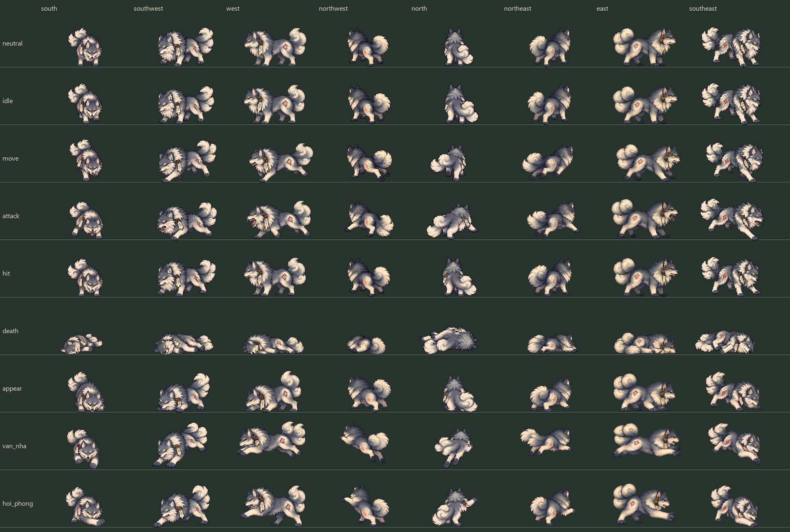
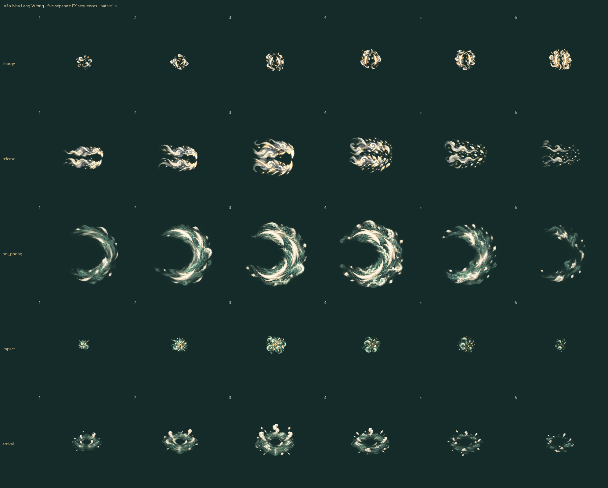

Trúng–hụt–hủy là dữ kiện của fixture riêng. Đòn né tính từ lúc khóa hướng, cộng250ms phản ứng và120ms độ trễ; tác động chỉ bật khi fixture xác nhận trúng. Phát lại mới đặt boss về điểm bắt đầu.
Pose đang chọn · chung scale và điểm chân
Ma trận tám hướng / tám action
North và hai hướng chéo sau được vẽ từ phía lưng. Death giữ tỷ lệ gốc; thân nằm không chuẩn hóa về chiều cao đứng.

Năm lớp khí thuật riêng
Tụ lực · nanh khí · va chạm · Hồi Phong · mây đáp. Alpha mềm giữ nguyên, bóng và vùng gameplay nằm riêng.
